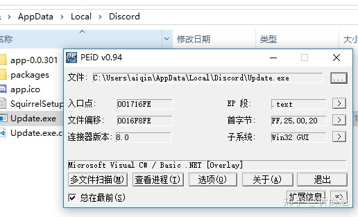
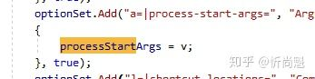
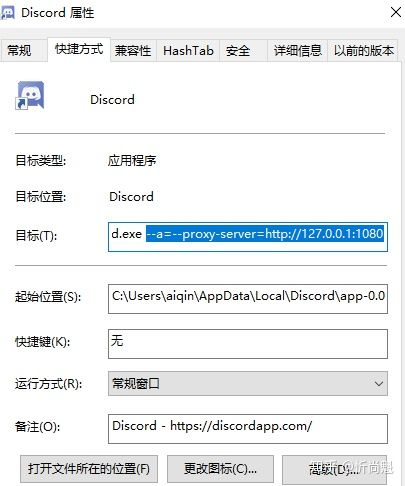

转自 爱琴炫彩，知乎原文地址：https://zhuanlan.zhihu.com/p/47048247
本文是Discord的PC客户端单独设置代理的方法。主要解决开PAC模式进不了Discord，又不想开全局模式的问题。
如果你没有代理，请不用向下读了。
1. 设置Update.exe的代理
桌面的Discord图标并不直接启动Discord.exe，而是先运行Update.exe程序进行升级检测，然后才启动Discord.exe，所以要先把Update.exe设置代理。
先看看这个exe是什么语言写的

好的，是c#，所有c#程序都支持使用.config配置项来配置代理，将如下内容保存为 Update.exe.config 存放在Update.exe的同目录下，来给其设置代理。
1 | |
注：127.0.0.1:1080 是小飞机默认的本地代理地址，如使用其他代理工具，请根据实际情况填写。
2. 设置Discord.exe的代理
Discord是electron框架编写的，理论支持chrome的命令行参数，所以直接改快捷方式命令行即可，反编译看了一下Update.exe的源码，发现了Discord.exe增加启动参数的方法。

所以我们使用a=参数增加代理，复制下面的内容添加到“目标”的尾部。
1 | |

以上两项修改完，你可以运行快捷方式无需全局代理启动Discord了。
V2RayN默认没开http代理，你要打开http代理才行。 另外HTTP代理端口号是SOCKS5代理端口号+1，也就是说如果默认是10808，那么HTTP代理打开后，端口号是10809